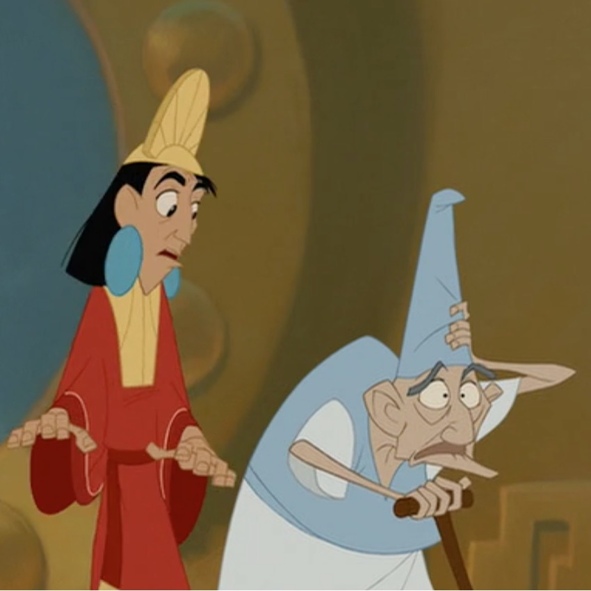
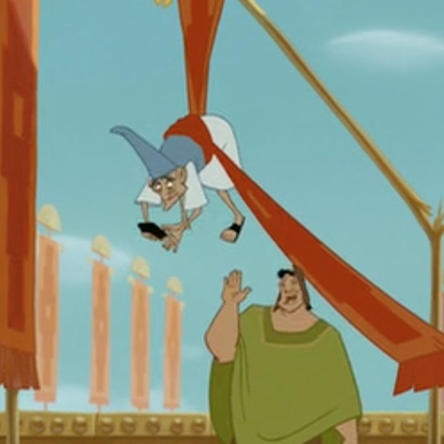
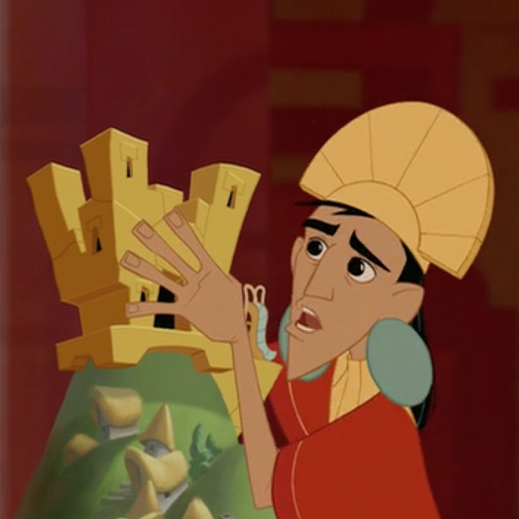

IN WHICH MY DAUGHTER SOPHIA CONFESSES TO GROSS EARLY CHILDHOOD MISUNDERSTANDING
You know the movie The Emperor’s New Groove? My girls loved the movie when they were little. I was talking to Sophie today (she’s 13 now) and she made these related confessions…
-

First, she thought the man who "threw off the Emperor's groove" in this scene was a woman.
Yeah I don't know...
-

Second, in this scene she thought Pacha handed him his cell phone.
In 13th century Central America. That he then put on his foot...
-
Third, she thought "groove" was some kind of unusual word for palace.
Because Kuzco "threw" the man off his "groove".
-
She thought this all her life until her sister @imc explained it to her a few years ago.
-
And this made perfect sense, she said, because the movie is called The Emperor's New Groove and the plot centers around...
-

The emperor's plans to build a new "groove".
-
Boom baby.